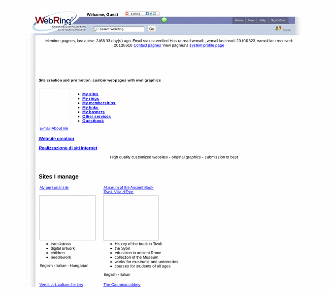

Previewing: Agnes' sites and rings:art,culture,hobby, travel, ++ Previewing: Agnes' sites and rings:art,culture,hobby, travel, ++ 
Use the left/right red arrow controls to navigate through this ring - Click the preview image to visit the member site.

I'm interested particularly in art,culture,creativity and computer.I'm member of 1000+ webrings,webmistress and ringmistress of sites about fine art,culture,religion, hobbies, kids,women,cats,computer,travel and more...On my private site I publish my digital artwork, translations,and more. See my sites,join my rings!Guestbook,link exchange.
Agnes' sites and rings:art,culture,hobby, travel, ++ owned by:
 pagnes pagnes
A member of the original webring since 10/21/2011.
|
|